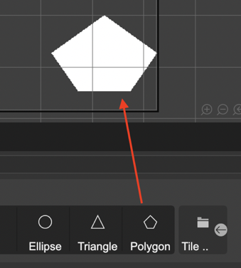
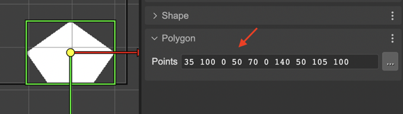

Polygon
You can create Polygon object by dropping the Polygon block, from the Blocks view, on the scene.
A polygon is made with points. You can edit the points in the Polygon section or with the Polygon tool.
The Polygon section shows the Points field. The points are presented as a string of the X Y pairs of the points, separated by a space.
The Polygon tool (that you can activate with the Y key) shows the polygon’s points in the scene. It allows you:
Change the position of a point: drag the point with the mouse cursor.
Delete a point: move the mouse cursor over the point and press the Delete key (or double click). When the cursor is over the point, it is painted in red color.
Add a new point: move the mouse cursor over a line. It shows a white handler under the cursor, you can drag it for creating a new point.


The Polygon code is generated by the scene compiler using the polygon object factory:
const polygon = this.add.polygon(10, 10, "0 0 20 70 100 100 80 20");